Example uses of the package#
In this example notebook, you will find example uses of the process_file function on the different battery test types that are implemented.
Basically, the function has three steps:
Preprocessing the file by reading and calculating useful columns such as Cycle, State and Capacity
Finding every types of tests available in the data
For each type of test, extracting and plotting battery characteristiques over its State of Charge (SOC)
[1]:
import os
import sys
sys.path.append(os.path.abspath(os.path.join('..', '..', 'src')))
import pandas as pd
from processing import process_file
GITT Tests#
[3]:
file_path_GITT = os.path.join('example_file_GITT.parquet')
df = process_file(file_path_GITT, png=True)
File : example_file_GITT.parquet
Length : 20862255
Preprocessing Time : 106.93471002578735
Find Test Time : 191.40428376197815
Test : GITT ; Length : 20769192
Pulse Cycle TestTime SOC Voltage Diffusion Coefficient \
Pulse 0 1 46801.00 1.000000 2.484417 7.915816e-16
Pulse 1 1 53999.98 0.980011 0.575001 3.010686e-16
Pulse 2 1 61199.98 0.960011 0.379431 2.457276e-16
Pulse 3 1 68399.98 0.940010 0.272730 1.544933e-16
Pulse 4 1 75599.98 0.920010 0.216829 3.283266e-17
... ... ... ... ... ... ...
Pulse 391 4 2692799.98 0.880001 0.216267 3.698408e-17
Pulse 392 4 2699099.98 0.900001 0.217590 3.897789e-17
Pulse 393 4 2705399.98 0.920000 0.219228 5.162642e-16
Pulse 394 4 2711699.98 0.940000 0.236643 8.861487e-16
Pulse 395 4 2717999.98 0.960000 0.332785 9.094651e-16
Resistance delta_Es delta_Et R_1s R_30s R_60s \
Pulse 0.000000 -1.909416 -2.127782 165.023082 758.924099 805.993091
Pulse 0.407378 -0.195575 -0.353341 40.020037 55.899471 64.487923
Pulse 0.419051 -0.106713 -0.213404 29.953085 39.266047 45.086603
Pulse 0.386057 -0.055892 -0.140963 26.507407 33.423179 37.749012
Pulse 0.398185 -0.018148 -0.099285 24.759694 29.760518 32.738051
... ... ... ... ... ... ...
Pulse 0.038879 0.001317 0.006788 0.097774 0.201978 0.235965
Pulse 0.038633 0.001626 0.008164 0.097134 0.200620 0.235773
Pulse 0.037477 0.017410 0.024020 0.096549 0.202129 0.241834
Pulse 0.038293 0.096147 0.101251 0.098425 0.214634 0.264849
Pulse 0.041196 0.172151 0.178949 0.107908 0.252952 0.322182
R_180s tau State
Pulse 987.455455 3597.98 D
Pulse 87.684406 3598.98 D
Pulse 61.030638 3598.98 D
Pulse 49.294964 3598.98 D
Pulse 40.772240 3598.98 D
... ... ... ...
Pulse 0.271658 3598.98 C
Pulse 0.279610 3598.98 C
Pulse 0.307559 3598.98 C
Pulse 0.386749 3598.98 C
Pulse 0.513099 3598.98 C
[396 rows x 15 columns]
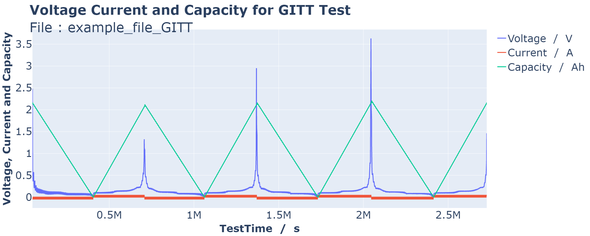
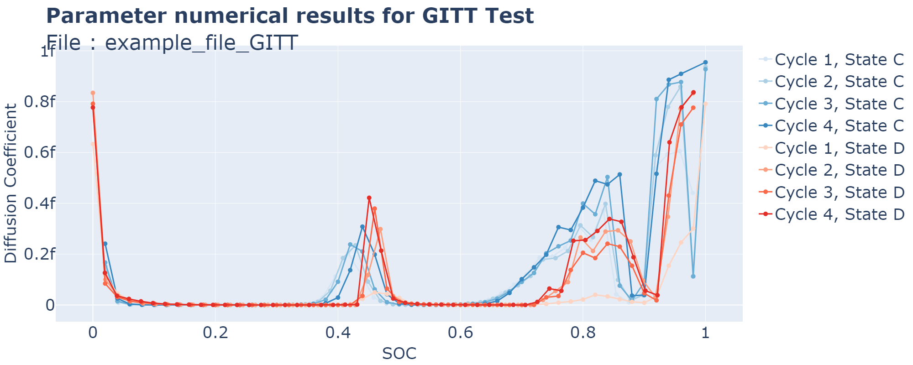
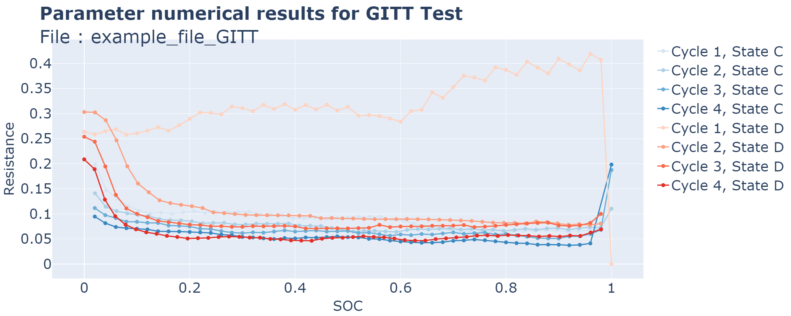
GITT Time : 67.7316882610321
Total Time : 378.9157886505127
ICI Tests#
[4]:
file_path_ICI = os.path.join('example_file_ICI.parquet')
column_names = {'Ewe/V': 'Voltage'}
df = process_file(file_path_ICI, column_names=column_names, png=True)
File : example_file_ICI.parquet
Length : 1473720
Preprocessing Time : 20.8307363986969
Find Test Time : 66.92448377609253
Test : ICI ; Length : 1473719
Pulse Cycle TestTime SOC Voltage Diffusion Coefficient \
Pulse 1 0 2.999994e+02 0.007712 3.597049 4.069951e-11
Pulse 2 0 6.099991e+02 0.015425 3.600956 1.270357e-11
Pulse 3 0 9.199989e+02 0.023138 3.602941 3.124965e-12
Pulse 4 0 1.229999e+03 0.030851 3.604182 3.690240e-12
Pulse 5 0 1.539998e+03 0.038564 3.605041 7.013435e-12
... ... ... ... ... ... ...
Pulse 13554 56 4.219626e+06 0.951931 4.213180 9.710987e-09
Pulse 13555 56 4.219936e+06 0.960827 4.219154 8.403364e-09
Pulse 13556 56 4.220246e+06 0.969724 4.225758 9.690374e-09
Pulse 13557 56 4.220556e+06 0.978622 4.233449 9.187296e-09
Pulse 13558 56 4.220866e+06 0.987519 4.242534 1.023601e-08
Resistance tau State
Pulse 0.164007 9.851786 C
Pulse 0.133548 9.851786 C
Pulse 0.131773 9.851786 C
Pulse 0.120988 9.851786 C
Pulse 0.109105 9.851786 C
... ... ... ...
Pulse 0.009373 9.851920 C
Pulse 0.014423 9.851920 C
Pulse 0.007797 9.851920 C
Pulse 0.010594 9.851920 C
Pulse 0.000408 9.851920 C
[13558 rows x 9 columns]
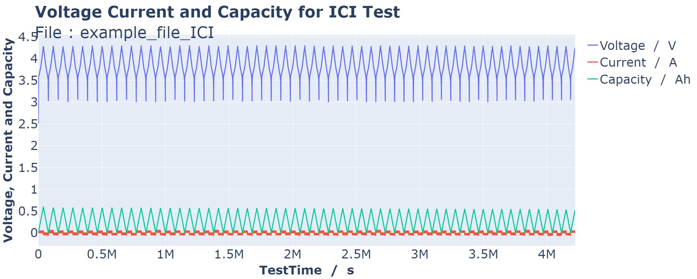
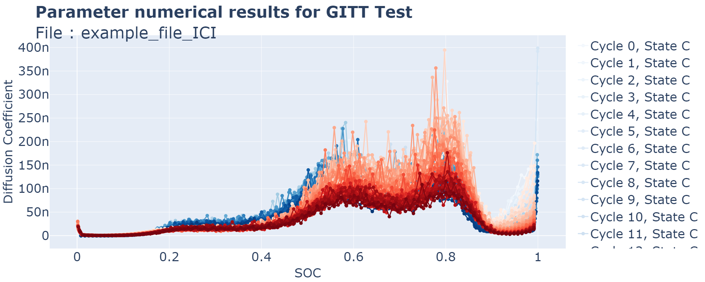
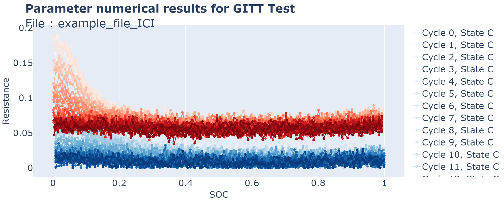
ICI Time : 137.5370650291443
Total Time : 226.01447749137878
HPPC Tests#
HPPC (Hybrid Pulse Power Characterization) is composed of successive charge and discharge pulses are applied to the battery at different SOC
Here, the algorithm only extracts and processes the HPPC cycling data.
[5]:
file_path_HPPC = os.path.join('example_file_HPPC.parquet')
column_names = {
'Time': 'SysTime',
'E': 'Current',
' W': 'Voltage'
}
def my_debug_func(df):
df[['Time', 'ClimaTemp']] = df['Time'].str.extract(r'(.+ \d{2}:\d{2}:\d{2})\.?(\d+)?')
df["Time"] = pd.to_datetime(df["Time"])
return df
df = process_file(file_path_HPPC, column_names=column_names, debug_func=my_debug_func, png=True)
File : example_file_HPPC.parquet
Length : 6638226
Preprocessing Time : 51.429892778396606
Find Test Time : 0.30294036865234375
Test : CCCV ; Length : 28649
Test : HPPC ; Length : 26850
Pulse Cycle TestTime SOC Voltage State R_charge \
Pulse 1 2 2540364.0 0.900844 4.079817 D 0.111250
Pulse 2 2 2543003.0 0.799412 4.019770 D 0.024969
Pulse 3 2 2545641.0 0.698158 3.910494 D 0.025031
Pulse 4 2 2548280.0 0.596766 3.812790 D 0.023334
Pulse 5 2 2550918.0 0.495523 3.715270 D 0.023680
Pulse 6 2 2553557.0 0.394644 3.635278 D 0.023428
Pulse 7 2 2556195.0 0.293388 3.535548 D 0.024168
Pulse 8 2 2558834.0 0.192012 3.436642 D 0.025245
Pulse 9 2 2561472.0 0.090768 3.196508 D 0.034912
Pulse 10 2 2564583.0 0.002342 2.712583 D 0.072719
R_discharge P_charge P_discharge
Pulse 0.122509 2.930197 32.240626
Pulse 0.025881 23.055509 146.815575
Pulse 0.024954 41.152273 141.319287
Pulse 0.023648 61.556029 138.798255
Pulse 0.023916 77.779100 127.047862
Pulse 0.024073 92.814723 117.915850
Pulse 0.024576 107.133357 105.358193
Pulse 0.026367 118.850682 88.821815
Pulse 0.036678 114.545151 47.486555
Pulse 0.156392 82.663942 3.401849
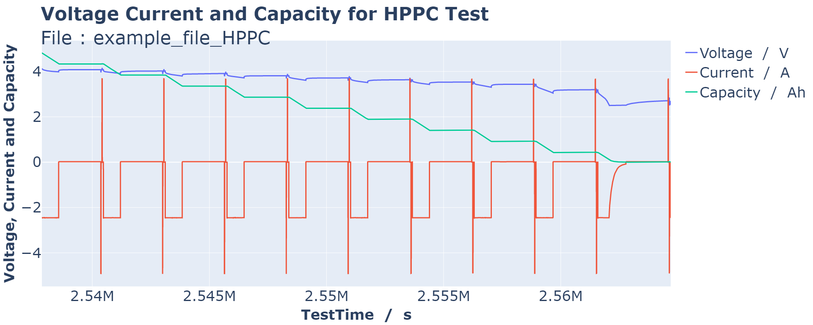
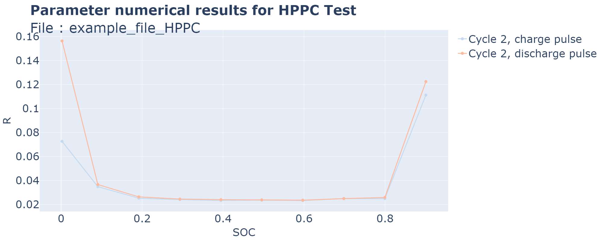
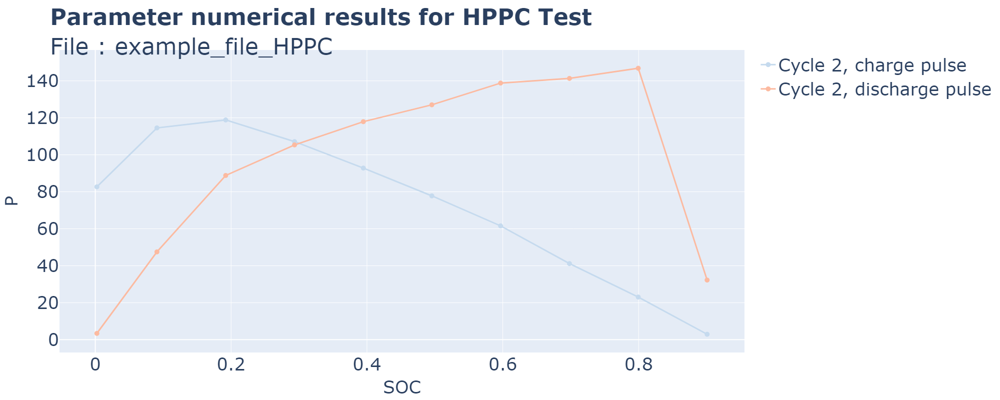
HPPC Time : 2.089202404022217
Total Time : 53.87059736251831
dQ/dV Tests#
[6]:
file_path_dqdv = os.path.join('example_file_dqdv.parquet')
df = process_file(file_path_dqdv, png=True)
File : example_file_dqdv.parquet
Length : 1269264
Preprocessing Time : 6.852182149887085
Find Test Time : 3.260131359100342
Test : CCCV ; Length : 1243776
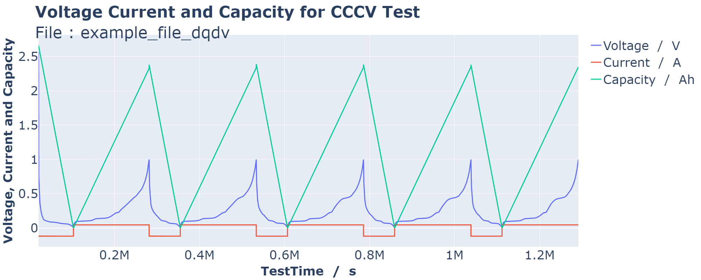
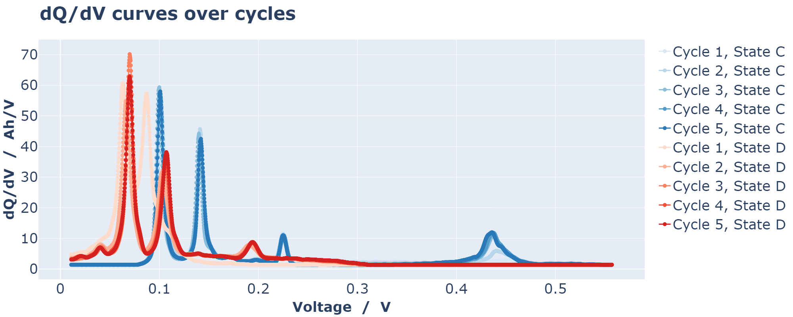
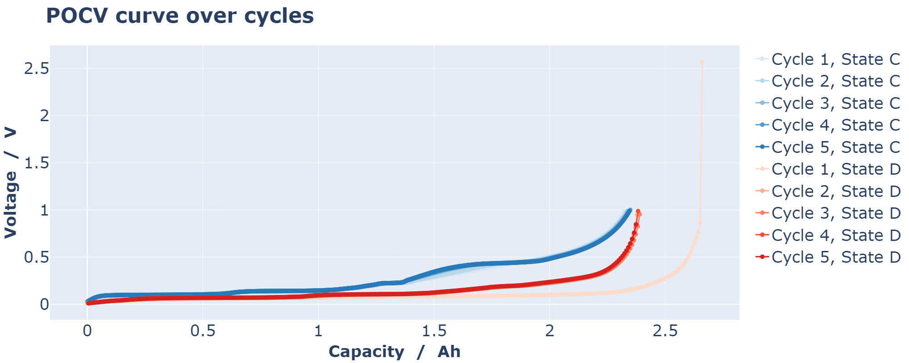
dQ/dV Time : 10.452749967575073
Total Time : 21.334325313568115